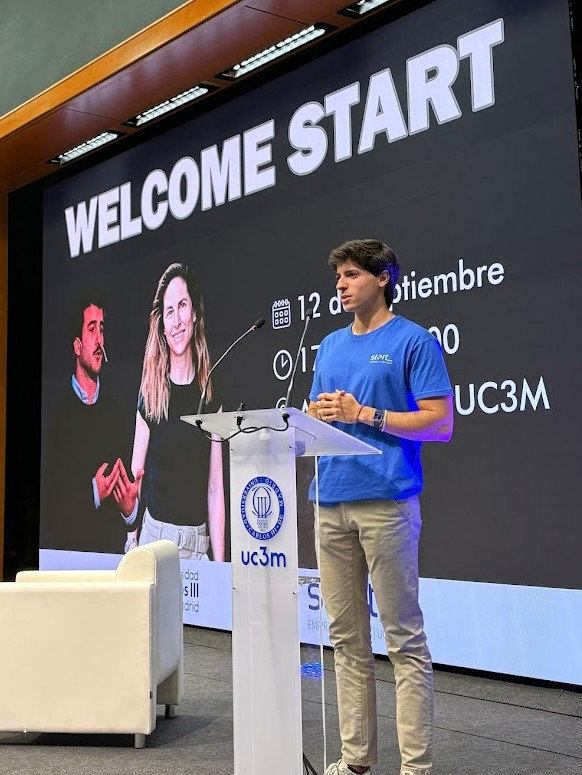

Curiosity has been a constant in everything I've done so far.
I've always been curious to learn something new, understand how things work, and find out whether there is a better way to do them. Above all, I like putting that curiosity into practice.
Professionally, I am especially drawn to business because it brings together many of the questions that spark that curiosity: why a company grows, what drives a customer, how to improve a process, or how to position a brand.
That curiosity has led me to explore very different areas, from business, operations, growth, marketing, automation, and technology to graphic design. Over time, I have realized that this breadth is one of my greatest strengths. I like understanding problems and finding solutions with the whole business in mind.
I especially enjoy fast-moving environments with autonomy and plenty still to build. Places where I can take ownership, stay close to decisions, propose ideas, execute them, and learn.
I hold myself to high standards and have a clear professional ambition: to keep growing, tackle increasingly complex problems, and become someone capable of creating more and more value wherever I am.
I still have a great deal to learn. And that is precisely one of the things that motivates me most.
Education
Degree in Business Administration and Management
Universidad Carlos III de Madrid
International experience
Erasmus at the University of Latvia, Riga
Focus
Growth, business, operations & technology
Experience
Building ventures and projects since age 13
